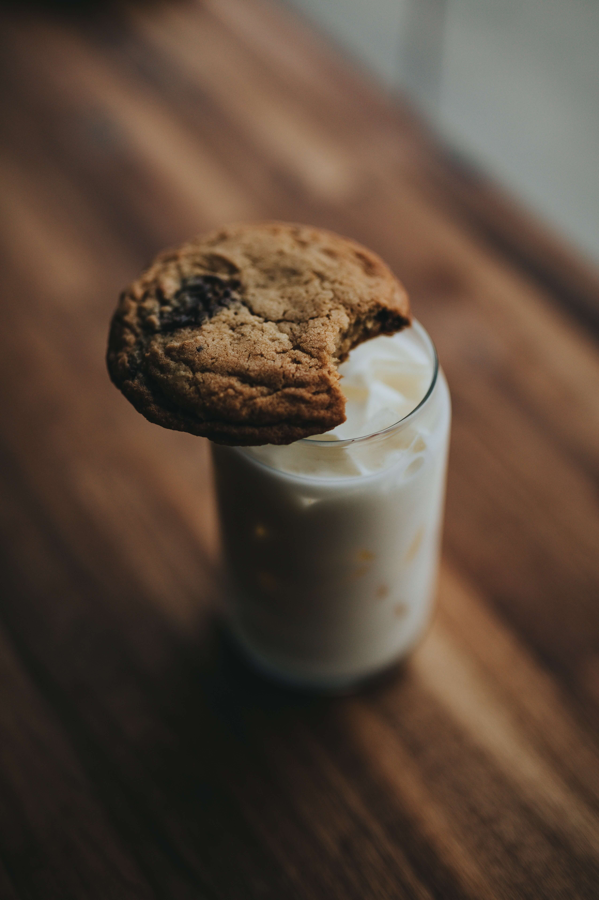

Oatmeal Raisin Cookie

Description
An old stand-by cookie recipe that the families love.
Ingredients
- ¾ cup butter, softened
- ¾ cup white sugar
- ¾ cup packed light brown sugar
- 2 eggs
- 1 teaspoon vanilla extract
- 1 ¼ cups all-purpose flour
- 1 teaspoon baking soda
- ¾ teaspoon ground cinnamon
- ½ teaspoon salt
- 2 ¾ cups rolled oats
- 1 cup raisins
Steps
- Preheat oven to 375 degrees F (190 degrees C).
-
In large bowl, cream together butter, white sugar, and brown sugar until
smooth. Beat in the eggs and vanilla until fluffy. Stir together flour,
baking soda, cinnamon, and salt. Gradually beat into butter mixture.
Stir in oats and raisins. Drop by teaspoonfuls onto ungreased cookie
sheets.
-
Bake 8 to 10 minutes in the preheated oven, or until golden brown. Cool
slightly, remove from sheet to wire rack. Cool completely.